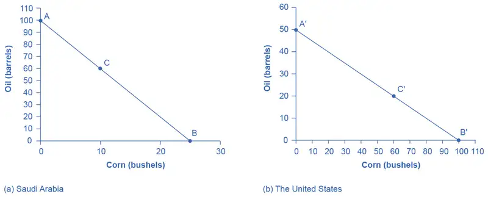
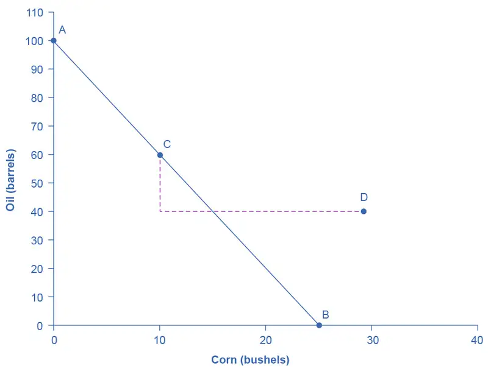
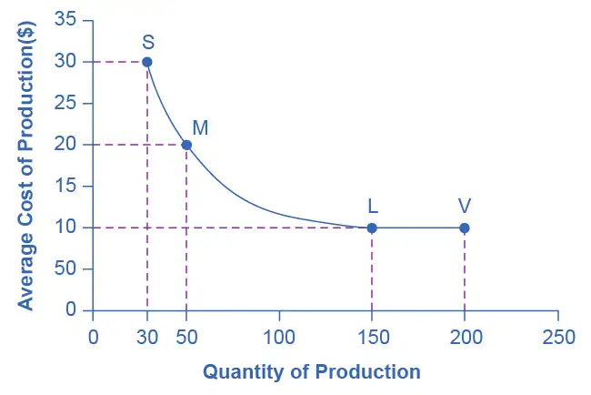
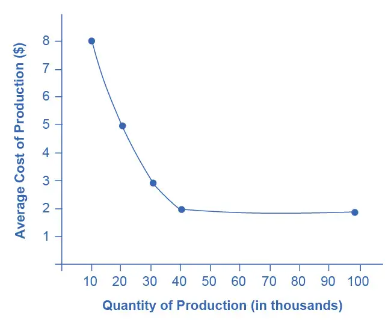

Chapter 33: International Trade¶
Introduction¶
Bring It Home: Just Whose iPhone Is It?
The iPhone is a global product. Apple does not manufacture the iPhone components, nor does it assemble them. The assembly is done by Foxconn Corporation, a Taiwanese company, at its factories in China and India. But, Samsung, the electronics firm and competitor to Apple, actually supplies many of the parts that make up an iPhone. In earlier models, Samsung parts made up as much as 26% of the total costs of production. And in more recent versions, Samsung manufactures the displays and cameras. In some ways, then, Samsung is both the biggest supplier and biggest competitor for Apple. Why do these two firms work together to produce the iPhone? To understand the economic logic behind international trade, you have to accept, as these firms do, that trade is about mutually beneficial exchange. Samsung is one of the world’s largest electronics parts suppliers. Apple lets Samsung focus on making the best parts, which allows Apple to concentrate on its strength—designing elegant products that are easy to use. If each company (and by extension each country) focuses on what it does best, there will be gains for all through trade.
Chapter Outline: Introduction to International Trade
In this chapter, you will learn about:
- Absolute and Comparative Advantage
- What Happens When a Country Has an Absolute Advantage in All Goods
- Intra-industry Trade between Similar Economies
- The Benefits of Reducing Barriers to International Trade
We live in a global marketplace. The food on your table might include fresh fruit from Chile, cheese from France, and bottled water from Scotland. Your wireless phone might have been made in Taiwan or Korea. The clothes you wear might be designed in Italy and manufactured in China. The toys you give to a child might have come from India. The car you drive might come from Japan, Germany, or Korea. The gasoline in the tank might be refined from crude oil from Saudi Arabia, Mexico, or Nigeria. As a worker, if your job is involved with farming, machinery, airplanes, cars, scientific instruments, or many other technology-related industries, the odds are good that a hearty proportion of the sales of your employer—and hence the money that pays your salary—comes from export sales. We are all linked by international trade, and the volume of that trade has grown dramatically in the last few decades.
The first wave of globalization started in the nineteenth century and lasted up to the beginning of World War I. Over that time, global exports as a share of global GDP rose from less than 1% of GDP in 1820 to 9% of GDP in 1913. As the Nobel Prize-winning economist Paul Krugman of Princeton University wrote in 1995:
It is a late-twentieth-century conceit that we invented the global economy just yesterday. In fact, world markets achieved an impressive degree of integration during the second half of the nineteenth century. Indeed, if one wants a specific date for the beginning of a truly global economy, one might well choose 1869, the year in which both the Suez Canal and the Union Pacific railroad were completed. By the eve of the First World War steamships and railroads had created markets for standardized commodities, like wheat and wool, that were fully global in their reach. Even the global flow of information was better than modern observers, focused on electronic technology, tend to realize: the first submarine telegraph cable was laid under the Atlantic in 1858, and by 1900 all of the world’s major economic regions could effectively communicate instantaneously.
This first wave of globalization crashed to a halt early in the twentieth century. World War I severed many economic connections. During the Great Depression of the 1930s, many nations misguidedly tried to fix their own economies by reducing foreign trade with others. World War II further hindered international trade. Global flows of goods and financial capital were rebuilt only slowly after World War II. It was not until the early 1980s that global economic forces again became as important, relative to the size of the world economy, as they were before World War I.
33.1 Absolute and Comparative Advantage¶
Learning Objectives
By the end of this section, you will be able to:
- Define absolute advantage, comparative advantage, and opportunity costs
- Explain the gains of trade created when a country specializes
The American statesman Benjamin Franklin (1706–1790) once wrote: “No nation was ever ruined by trade.” Many economists would express their attitudes toward international trade in an even more positive manner. The evidence that international trade confers overall benefits on economies is pretty strong. Trade has accompanied economic growth in the United States and around the world. Many of the national economies that have shown the most rapid growth in the last several decades—for example, Japan, South Korea, China, and India—have done so by dramatically orienting their economies toward international trade. There is no modern example of a country that has shut itself off from world trade and yet prospered. To understand the benefits of trade, or why we trade in the first place, we need to understand the concepts of comparative and absolute advantage.
In 1817, David Ricardo, a businessman, economist, and member of the British Parliament, wrote a treatise called On the Principles of Political Economy and Taxation. In this treatise, Ricardo argued that specialization and free trade benefit all trading partners, even those that may be relatively inefficient. To see what he meant, we must be able to distinguish between absolute and comparative advantage.
A country has an absolute advantage over another country in producing a good if it can produce more of that good. Absolute advantage can be the result of a country’s having more resources, having more productive resources, or its natural endowment. For example, extracting oil in Saudi Arabia is pretty much just a matter of “drilling a hole.” Producing oil in other countries can require considerable exploration and costly technologies for drilling and extraction—if they have any oil at all. The United States has some of the richest farmland in the world, making it easier to grow corn and wheat than in many other countries. Guatemala and Colombia have climates especially suited for growing coffee. Chile and Zambia have some of the world’s richest copper mines. As some have argued, “geography is destiny.” Chile will provide copper and Guatemala will produce coffee, and they will trade. When each country has a product others need and it can produce it with fewer resources in one country than in another, then it is easy to imagine all parties benefitting from trade. However, thinking about trade just in terms of geography and absolute advantage is incomplete. Trade really occurs because of comparative advantage.
Recall from the chapter Choice in a World of Scarcity that a country has a comparative advantage when it can produce a good at a lower cost in terms of other goods. The question each country or company should be asking when it trades is this: “What do we give up to produce this good?” It should be no surprise that the concept of comparative advantage is based on this idea of opportunity cost from Choice in a World of Scarcity. For example, if Zambia focuses its resources on producing copper, it cannot use its labor, land and financial resources to produce other goods such as corn. As a result, Zambia gives up the opportunity to produce corn. How do we quantify the cost in terms of other goods? Simplify the problem and assume that Zambia just needs labor to produce copper and corn. The companies that produce either copper or corn tell you that it takes two hours to mine a ton of copper and one hour to harvest a bushel of corn. This means the opportunity cost of producing a ton of copper is two bushels of corn. The next section develops absolute and comparative advantage in greater detail and relates them to trade.
Link It Up
Visit this website for a list of articles and podcasts pertaining to international trade topics.
A Numerical Example of Absolute and Comparative Advantage¶
Consider a hypothetical world with two countries, Saudi Arabia and the United States, and two products, oil and corn. Further assume that consumers in both countries desire both these goods. These goods are homogeneous, meaning that consumers/producers cannot differentiate between corn or oil from either country. There is only one resource available in both countries, labor hours. Saudi Arabia can produce oil with fewer resources, while the United States can produce corn with fewer resources. Table 33.1 illustrates the advantages of the two countries, expressed in terms of how many hours it takes to produce one unit of each good.
Table 33.1 How Many Hours It Takes to Produce Oil and Corn
| Country | Oil (hours per barrel) | Corn (hours per bushel) |
|---|---|---|
| Saudi Arabia | 1 | 4 |
| United States | 2 | 1 |
In Table 33.1, Saudi Arabia has an absolute advantage in producing oil because it only takes an hour to produce a barrel of oil compared to two hours in the United States. The United States has an absolute advantage in producing corn.
To simplify, let’s say that Saudi Arabia and the United States each have 100 worker hours (see Table 33.2). Figure 33.2 illustrates what each country is capable of producing on its own using a production possibility frontier (PPF) graph. Recall from Choice in a World of Scarcity that the production possibilities frontier shows the maximum amount that each country can produce given its limited resources, in this case workers, and its level of technology.
Table 33.2 Production Possibilities before Trade
| Country | Oil Production using 100 worker hours (barrels) | Corn Production using 100 worker hours (bushels) | |
|---|---|---|---|
| Saudi Arabia | 100 | or | 25 |
| United States | 50 | or | 100 |

Arguably Saudi and U.S. consumers desire both oil and corn to live. Let’s say that before trade occurs, both countries produce and consume at point C or C'. Thus, before trade, the Saudi Arabian economy will devote 60 worker hours to produce oil, as Table 33.3 shows. Given the information in Table 33.1, this choice implies that it produces/consumes 60 barrels of oil. With the remaining 40 worker hours, since it needs four hours to produce a bushel of corn, it can produce only 10 bushels. To be at point C', the U.S. economy devotes 40 worker hours to produce 20 barrels of oil and it can allocate the remaining worker hours to produce 60 bushels of corn.
Table 33.3 Production before Trade
| Country | Oil Production (barrels) | Corn Production (bushels) |
|---|---|---|
| Saudi Arabia (C) | 60 | 10 |
| United States (C') | 20 | 60 |
| Total World Production | 80 | 70 |
The slope of the production possibility frontier illustrates the opportunity cost of producing oil in terms of corn. Using all its resources, the United States can produce 50 barrels of oil or 100 bushels of corn; therefore, the opportunity cost of one barrel of oil is two bushels of corn—or the slope is 1/2. Thus, in the U.S. production possibility frontier graph, every increase in oil production of one barrel implies a decrease of two bushels of corn. Saudi Arabia can produce 100 barrels of oil or 25 bushels of corn. The opportunity cost of producing one barrel of oil is the loss of 1/4 of a bushel of corn that Saudi workers could otherwise have produced. In terms of corn, notice that Saudi Arabia gives up the least to produce a barrel of oil. Table 33.4 summarizes these calculations.
Table 33.4 Opportunity Cost and Comparative Advantage
| Country | Opportunity cost of one unit — Oil (in terms of corn) | Opportunity cost of one unit — Corn (in terms of oil) |
|---|---|---|
| Saudi Arabia | ¼ | 4 |
| United States | 2 | ½ |
Again recall that we defined comparative advantage as the opportunity cost of producing goods. Since Saudi Arabia gives up the least to produce a barrel of oil, (\(\frac{1}{4}\) < \(2\) in Table 33.4) it has a comparative advantage in oil production. The United States gives up the least to produce a bushel of corn, so it has a comparative advantage in corn production.
In this example, there is symmetry between absolute and comparative advantage. Saudi Arabia needs fewer worker hours to produce oil (absolute advantage, see Table 33.1), and also gives up the least in terms of other goods to produce oil (comparative advantage, see Table 33.4). Such symmetry is not always the case, as we will show after we have discussed gains from trade fully, but first, read the following Clear It Up feature to make sure you understand why the PPF line in the graphs is straight.
Clear It Up: Can a production possibility frontier be straight?
When you first met the production possibility frontier (PPF) in the chapter on Choice in a World of Scarcity we drew it with an outward-bending shape. This shape illustrated that as we transferred inputs from producing one good to another—like from education to health services—there were increasing opportunity costs. In the examples in this chapter, we draw the PPFs as straight lines, which means that opportunity costs are constant. When we transfer a marginal unit of labor away from growing corn and toward producing oil, the decline in the quantity of corn and the increase in the quantity of oil is always the same. In reality this is possible only if the contribution of additional workers to output did not change as the scale of production changed. The linear production possibilities frontier is a less realistic model, but a straight line simplifies calculations. It also illustrates economic themes like absolute and comparative advantage just as clearly.
Gains from Trade¶
Consider the trading positions of the United States and Saudi Arabia after they have specialized and traded. Before trade, Saudi Arabia produces/consumes 60 barrels of oil and 10 bushels of corn. The United States produces/consumes 20 barrels of oil and 60 bushels of corn. Given their current production levels, if the United States can trade an amount of corn fewer than 60 bushels and receive in exchange an amount of oil greater than 20 barrels, it will gain from trade. With trade, the United States can consume more of both goods than it did without specialization and trade. (Recall that the chapter Welcome to Economics! defined specialization as it applies to workers and firms. Economists also use specialization to describe the occurrence when a country shifts resources to focus on producing a good that offers comparative advantage.) Similarly, if Saudi Arabia can trade an amount of oil less than 60 barrels and receive in exchange an amount of corn greater than 10 bushels, it will have more of both goods than it did before specialization and trade. Table 33.5 illustrates the range of trades that would benefit both sides.
Table 33.5 The Range of Trades That Benefit Both the United States and Saudi Arabia
| The U.S. economy, after specialization, will benefit if it: | The Saudi Arabian economy, after specialization, will benefit if it: |
|---|---|
| Exports no more than 60 bushels of corn | Imports at least 10 bushels of corn |
| Imports at least 20 barrels of oil | Exports less than 60 barrels of oil |
The underlying reason why trade benefits both sides is rooted in the concept of opportunity cost, as the following Clear It Up feature explains. If Saudi Arabia wishes to expand domestic production of corn in a world without international trade, then based on its opportunity costs it must give up four barrels of oil for every one additional bushel of corn. If Saudi Arabia could find a way to give up less than four barrels of oil for an additional bushel of corn (or equivalently, to receive more than one bushel of corn for four barrels of oil), it would be better off.
Clear It Up: What are the opportunity costs and gains from trade?
The range of trades that will benefit each country is based on the country’s opportunity cost of producing each good. The United States can produce 100 bushels of corn or 50 barrels of oil. For the United States, the opportunity cost of producing one barrel of oil is two bushels of corn. If we divide the numbers above by 50, we get the same ratio: one barrel of oil is equivalent to two bushels of corn, or (100/50 = 2 and 50/50 = 1). In a trade with Saudi Arabia, if the United States is going to give up 100 bushels of corn in exports, it must import at least 50 barrels of oil to be just as well off. Clearly, to gain from trade it needs to be able to gain more than a half barrel of oil for its bushel of corn—or why trade at all?
Recall that David Ricardo argued that if each country specializes in its comparative advantage, it will benefit from trade, and total global output will increase. How can we show gains from trade as a result of comparative advantage and specialization? Table 33.6 shows the output assuming that each country specializes in its comparative advantage and produces no other good. This is 100% specialization. Specialization leads to an increase in total world production. (Compare the total world production in Table 33.3 to that in Table 33.6.)
Table 33.6 How Specialization Expands Output
| Country | Quantity produced after 100% specialization — Oil (barrels) | Quantity produced after 100% specialization — Corn (bushels) |
|---|---|---|
| Saudi Arabia | 100 | 0 |
| United States | 0 | 100 |
| Total World Production | 100 | 100 |
What if we did not have complete specialization, as in Table 33.6? Would there still be gains from trade? Consider another example, such as when the United States and Saudi Arabia start at C and C', respectively, as Figure 33.2 shows. Consider what occurs when trade is allowed and the United States exports 20 bushels of corn to Saudi Arabia in exchange for 20 barrels of oil.

Starting at point C, which shows Saudi oil production of 60, reduce Saudi oil domestic oil consumption by 20, since 20 is exported to the United States and exchanged for 20 units of corn. This enables Saudi to reach point D, where oil consumption is now 40 barrels and corn consumption has increased to 30 (see Figure 33.3). Notice that even without 100% specialization, if the “trading price,” in this case 20 barrels of oil for 20 bushels of corn, is greater than the country’s opportunity cost, the Saudis will gain from trade. Since the post-trade consumption point D is beyond its production possibility frontier, Saudi Arabia has gained from trade.
Link It Up
Visit this website for trade-related data visualizations.
33.2 What Happens When a Country Has an Absolute Advantage in All Goods¶
Learning Objectives
By the end of this section, you will be able to:
- Show the relationship between production costs and comparative advantage
- Identify situations of mutually beneficial trade
- Identify trade benefits by considering opportunity costs
What happens to the possibilities for trade if one country has an absolute advantage in everything? This is typical for high-income countries that often have well-educated workers, technologically advanced equipment, and the most up-to-date production processes. These high-income countries can produce all products with fewer resources than a low-income country. If the high-income country is more productive across the board, will there still be gains from trade? Good students of Ricardo understand that trade is about mutually beneficial exchange. Even when one country has an absolute advantage in all products, trade can still benefit both sides. This is because gains from trade come from specializing in one’s comparative advantage.
Production Possibilities and Comparative Advantage¶
Consider the example of trade between the United States and Mexico described in Table 33.7. In this example, it takes four U.S. workers to produce 1,000 pairs of shoes, but it takes five Mexican workers to do so. It takes one U.S. worker to produce 1,000 refrigerators, but it takes four Mexican workers to do so. The United States has an absolute advantage in productivity with regard to both shoes and refrigerators; that is, it takes fewer workers in the United States than in Mexico to produce both a given number of shoes and a given number of refrigerators.
Table 33.7 Resources Needed to Produce Shoes and Refrigerators
| Country | Number of Workers needed to produce 1,000 units — Shoes | Number of Workers needed to produce 1,000 units — Refrigerators |
|---|---|---|
| United States | 4 workers | 1 worker |
| Mexico | 5 workers | 4 workers |
Absolute advantage simply compares the productivity of a worker between countries. It answers the question, “How many inputs do I need to produce shoes in Mexico?” Comparative advantage asks this same question slightly differently. Instead of comparing how many workers it takes to produce a good, it asks, “How much am I giving up to produce this good in this country?” Another way of looking at this is that comparative advantage identifies the good for which the producer’s absolute advantage is relatively larger, or where the producer’s absolute productivity disadvantage is relatively smaller. The United States can produce 1,000 shoes with four-fifths as many workers as Mexico (four versus five), but it can produce 1,000 refrigerators with only one-quarter as many workers (one versus four). So, the comparative advantage of the United States, where its absolute productivity advantage is relatively greatest, lies with refrigerators, and Mexico’s comparative advantage, where its absolute productivity disadvantage is least, is in the production of shoes.
Mutually Beneficial Trade with Comparative Advantage¶
When nations increase production in their area of comparative advantage and trade with each other, both countries can benefit. Again, the production possibility frontier is a useful tool to visualize this benefit.
Consider a situation where the United States and Mexico each have 40 workers. For example, as Table 33.8 shows, if the United States divides its labor so that 40 workers are making shoes, then, since it takes four workers in the United States to make 1,000 shoes, a total of 10,000 shoes will be produced. (If four workers can make 1,000 shoes, then 40 workers will make 10,000 shoes). If the 40 workers in the United States are making refrigerators, and each worker can produce 1,000 refrigerators, then a total of 40,000 refrigerators will be produced.
Table 33.8 Production Possibilities before Trade with Complete Specialization
| Country | Shoe Production — using 40 workers | Refrigerator Production — using 40 workers | |
|---|---|---|---|
| United States | 10,000 shoes | or | 40,000 refrigerators |
| Mexico | 8,000 shoes | or | 10,000 refrigerators |
As always, the slope of the production possibility frontier for each country is the opportunity cost of one refrigerator in terms of foregone shoe production–when labor is transferred from producing the latter to producing the former (see Figure 33.4).

Let’s say that, in the situation before trade, each nation prefers to produce a combination of shoes and refrigerators that is shown at point A. Table 33.9 shows the output of each good for each country and the total output for the two countries.
Table 33.9 Total Production at Point A before Trade
| Country | Current Shoe Production | Current Refrigerator Production |
|---|---|---|
| United States | 5,000 | 20,000 |
| Mexico | 4,000 | 5,000 |
| Total | 9,000 | 25,000 |
Continuing with this scenario, suppose that each country transfers some amount of labor toward its area of comparative advantage. For example, the United States transfers six workers away from shoes and toward producing refrigerators. As a result, U.S. production of shoes decreases by 1,500 units (6/4 × 1,000), while its production of refrigerators increases by 6,000 (that is, 6/1 × 1,000). Mexico also moves production toward its area of comparative advantage, transferring 10 workers away from refrigerators and toward production of shoes. As a result, production of refrigerators in Mexico falls by 2,500 (10/4 × 1,000), but production of shoes increases by 2,000 pairs (10/5 × 1,000). Notice that when both countries shift production toward each of their comparative advantages (what they are relatively better at), their combined production of both goods rises, as shown in Table 33.10. The reduction of shoe production by 1,500 pairs in the United States is more than offset by the gain of 2,000 pairs of shoes in Mexico, while the reduction of 2,500 refrigerators in Mexico is more than offset by the additional 6,000 refrigerators produced in the United States.
Table 33.10 Shifting Production Toward Comparative Advantage Raises Total Output
| Country | Shoe Production | Refrigerator Production |
|---|---|---|
| United States | 3,500 | 26,000 |
| Mexico | 6,000 | 2,500 |
| Total | 9,500 | 28,500 |
This numerical example illustrates the remarkable insight of comparative advantage: even when one country has an absolute advantage in all goods and another country has an absolute disadvantage in all goods, both countries can still benefit from trade. Even though the United States has an absolute advantage in producing both refrigerators and shoes, it makes economic sense for it to specialize in the good for which it has a comparative advantage. The United States will export refrigerators and in return import shoes.
How Opportunity Cost Sets the Boundaries of Trade¶
This example shows that both parties can benefit from specializing in their comparative advantages and trading. By using the opportunity costs in this example, it is possible to identify the range of possible trades that would benefit each country.
Mexico started out, before specialization and trade, producing 4,000 pairs of shoes and 5,000 refrigerators (see Figure 33.4 and Table 33.9). Then, in the numerical example given, Mexico shifted production toward its comparative advantage and produced 6,000 pairs of shoes but only 2,500 refrigerators. Thus, if Mexico can export no more than 2,000 pairs of shoes (giving up 2,000 pairs of shoes) in exchange for imports of at least 2,500 refrigerators (a gain of 2,500 refrigerators), it will be able to consume more of both goods than before trade. Mexico will be unambiguously better off. Conversely, the United States started off, before specialization and trade, producing 5,000 pairs of shoes and 20,000 refrigerators. In the example, it then shifted production toward its comparative advantage, producing only 3,500 shoes but 26,000 refrigerators. If the United States can export no more than 6,000 refrigerators in exchange for imports of at least 1,500 pairs of shoes, it will be able to consume more of both goods and will be unambiguously better off.
The range of trades that can benefit both nations is shown in Table 33.11. For example, a trade where the U.S. exports 4,000 refrigerators to Mexico in exchange for 1,800 pairs of shoes would benefit both sides, in the sense that both countries would be able to consume more of both goods than in a world without trade.
Table 33.11 The Range of Trades That Benefit Both the United States and Mexico
| The U.S. economy, after specialization, will benefit if it: | The Mexican economy, after specialization, will benefit if it: |
|---|---|
| Exports fewer than 6,000 refrigerators | Imports at least 2,500 refrigerators |
| Imports at least 1,500 pairs of shoes | Exports no more than 2,000 pairs of shoes |
Trade allows each country to take advantage of lower opportunity costs in the other country. If Mexico wants to produce more refrigerators without trade, it must face its domestic opportunity costs and reduce shoe production. If Mexico, instead, produces more shoes and then trades for refrigerators made in the United States, where the opportunity cost of producing refrigerators is lower, Mexico can in effect take advantage of the lower opportunity cost of refrigerators in the United States. Conversely, when the United States specializes in its comparative advantage of refrigerator production and trades for shoes produced in Mexico, international trade allows the United States to take advantage of the lower opportunity cost of shoe production in Mexico.
The theory of comparative advantage explains why countries trade: they have different comparative advantages. It shows that the gains from international trade result from pursuing comparative advantage and producing at a lower opportunity cost. The following Work It Out feature shows how to calculate absolute and comparative advantage and the way to apply them to a country’s production.
Work It Out: Calculating Absolute and Comparative Advantage
In Canada a worker can produce 20 barrels of oil or 40 tons of lumber. In Venezuela, a worker can produce 60 barrels of oil or 30 tons of lumber.
Table 33.12
| Country | Oil (barrels) | Lumber (tons) | |
|---|---|---|---|
| Canada | 20 | or | 40 |
| Venezuela | 60 | or | 30 |
- Who has the absolute advantage in the production of oil or lumber? How can you tell?
- Which country has a comparative advantage in the production of oil?
- Which country has a comparative advantage in producing lumber?
- In this example, is absolute advantage the same as comparative advantage, or not?
- In what product should Canada specialize? In what product should Venezuela specialize?
Step 1. Make a table like Table 33.12.
Step 2. To calculate absolute advantage, look at the larger of the numbers for each product. One worker in Canada can produce more lumber (40 tons versus 30 tons), so Canada has the absolute advantage in lumber. One worker in Venezuela can produce 60 barrels of oil compared to a worker in Canada who can produce only 20.
Step 3. To calculate comparative advantage, find the opportunity cost of producing one barrel of oil in both countries. The country with the lowest opportunity cost has the comparative advantage. With the same labor time, Canada can produce either 20 barrels of oil or 40 tons of lumber. So in effect, 20 barrels of oil is equivalent to 40 tons of lumber: 20 oil = 40 lumber. Divide both sides of the equation by 20 to calculate the opportunity cost of one barrel of oil in Canada. 20/20 oil = 40/20 lumber. 1 oil = 2 lumber. To produce one additional barrel of oil in Canada has an opportunity cost of 2 lumber. Calculate the same way for Venezuela: 60 oil = 30 lumber. Divide both sides of the equation by 60. One oil in Venezuela has an opportunity cost of 1/2 lumber. Because 1/2 lumber < 2 lumber, Venezuela has the comparative advantage in producing oil.
Step 4. Calculate the opportunity cost of one lumber by reversing the numbers, with lumber on the left side of the equation. In Canada, 40 lumber is equivalent in labor time to 20 barrels of oil: 40 lumber = 20 oil. Divide each side of the equation by 40. The opportunity cost of one lumber is 1/2 oil. In Venezuela, the equivalent labor time will produce 30 lumber or 60 oil: 30 lumber = 60 oil. Divide each side by 30. One lumber has an opportunity cost of two oil. Canada has the lower opportunity cost in producing lumber.
Step 5. In this example, absolute advantage is the same as comparative advantage. Canada has the absolute and comparative advantage in lumber; Venezuela has the absolute and comparative advantage in oil.
Step 6. Canada should specialize in the commodity for which it has a relative lower opportunity cost, which is lumber, and Venezuela should specialize in oil. Canada will be exporting lumber and importing oil, and Venezuela will be exporting oil and importing lumber.
Comparative Advantage Goes Camping¶
To build an intuitive understanding of how comparative advantage can benefit all parties, set aside examples that involve national economies for a moment and consider the situation of a group of friends who decide to go camping together. The six friends have a wide range of skills and experiences, but one person in particular, Jethro, has done lots of camping before and is also a great athlete. Jethro has an absolute advantage in all aspects of camping: he is faster at carrying a backpack, gathering firewood, paddling a canoe, setting up tents, making a meal, and washing up. So here is the question: Because Jethro has an absolute productivity advantage in everything, should he do all the work?
Of course not! Even if Jethro is willing to work like a mule while everyone else sits around, he, like all mortals, only has 24 hours in a day. If everyone sits around and waits for Jethro to do everything, not only will Jethro be an unhappy camper, but there will not be much output for his group of six friends to consume. The theory of comparative advantage suggests that everyone will benefit if they figure out their areas of comparative advantage—that is, the area of camping where their productivity disadvantage is least, compared to Jethro. For example, it may be that Jethro is 80% faster at building fires and cooking meals than anyone else, but only 20% faster at gathering firewood and 10% faster at setting up tents. In that case, Jethro should focus on building fires and making meals, and others should attend to the other tasks, each according to where their productivity disadvantage is smallest. If the campers coordinate their efforts according to comparative advantage, they can all gain.
33.3 Intra-Industry Trade between Similar Economies¶
Learning Objectives
By the end of this section, you will be able to:
- Identify at least two advantages of intra-industry trading
- Explain the relationship between economies of scale and intra-industry trade
Absolute and comparative advantages explain a great deal about global trading patterns. For example, they help to explain the patterns that we noted at the start of this chapter, like why you may be eating fresh fruit from Chile or Mexico, or why lower productivity regions like Africa and Latin America are able to sell a substantial proportion of their exports to higher productivity regions like the European Union and North America. Comparative advantage, however, at least at first glance, does not seem especially well-suited to explain other common patterns of international trade.
The Prevalence of Intra-Industry Trade between Similar Economies¶
The theory of comparative advantage suggests that trade should happen between economies with large differences in opportunity costs of production. Roughly half of all U.S. trade involves shipping goods between the fairly similar high-income economies of Japan, Canada, and the United States. Furthermore, the trade has an important geographic component—the biggest trading partners of the United States are Canada and Mexico (see Table 33.13).
Table 33.13 Top Trading Partners (November 2021) (Source: https://www.census.gov/foreign-trade/statistics/highlights/toppartners.html)
| Country | U.S. Exports Go to ... | U.S. Imports Come from ... |
|---|---|---|
| China | 8.6% | 17.7% |
| Canada | 17.6% | 12.6% |
| Japan | 4.3% | 4.3% |
| Mexico | 15.8% | 13.6% |
| South Korea | 3.8% | 3.3% |
Moreover, the theory of comparative advantage suggests that each economy should specialize to a degree in certain products, and then exchange those products. A high proportion of trade, however, is intra-industry trade—that is, trade of goods within the same industry from one country to another. For example, the United States produces and exports autos and imports autos. Table 33.14 shows some of the largest categories of U.S. exports and imports. In all of these categories, the United States is both a substantial exporter and a substantial importer of goods from the same industry. In 2021, according to the U.S. Census Bureau, the United States exported $131 billion worth of autos, and imported $317 billion worth of autos. About 60% of U.S. trade and 60% of European trade is intra-industry trade.
Table 33.14 Some Intra-Industry U.S. Exports and Imports in 2021 (Source: https://www.census.gov/foreign-trade/data/index.html)
| Some U.S. Exports | Quantity of Exports ($ billions) | Quantity of Imports ($ billions) |
|---|---|---|
| Autos | $131 | $317 |
| Food and beverages | $147 | $167 |
| Capital goods | $474 | $695 |
| Consumer goods | $201 | $699 |
| Industrial supplies | $578 | $589 |
| Other transportation | $63 | $113 |
Why do similar high-income economies engage in intra-industry trade? What can be the economic benefit of having workers of fairly similar skills making cars, computers, machinery and other products which are then shipped across the oceans to and from the United States, the European Union, and Japan? There are two reasons: (1) The division of labor leads to learning, innovation, and unique skills; and (2) economies of scale.
Gains from Specialization and Learning¶
Consider the category of machinery, where the U.S. economy has considerable intra-industry trade. Machinery comes in many varieties, so the United States may be exporting machinery for manufacturing with wood, but importing machinery for photographic processing. The underlying reason why a country like the United States, Japan, or Germany produces one kind of machinery rather than another is usually not related to U.S., German, or Japanese firms and workers having generally higher or lower skills. It is just that, in working on very specific and particular products, firms in certain countries develop unique and different skills.
Specialization in the world economy can be very finely split. In fact, recent years have seen a trend in international trade, which economists call splitting up the value chain. The value chain describes how a good is produced in stages. As indicated in the beginning of the chapter, producing the iPhone involves designing and engineering the phone in the United States, supplying parts from Korea, assembling the parts in China, and advertising and marketing in the United States. Thanks in large part to improvements in communication technology, sharing information, and transportation, it has become easier to split up the value chain. Instead of production in a single large factory, different firms operating in various places and even different countries can divide the value chain. Because firms split up the value chain, international trade often does not involve nations trading whole finished products like automobiles or refrigerators. Instead, it involves shipping more specialized goods like, say, automobile dashboards or the shelving that fits inside refrigerators. Intra-industry trade between similar countries produces economic gains because it allows workers and firms to learn and innovate on particular products—and often to focus on very particular parts of the value chain.
Link It Up
Visit this website for some interesting information about the assembly of the iPhone.
Economies of Scale, Competition, Variety¶
A second broad reason that intra-industry trade between similar nations produces economic gains involves economies of scale. The concept of economies of scale, as we introduced in Production, Costs and Industry Structure, means that as the scale of output goes up, average costs of production decline—at least up to a point. Figure 33.5 illustrates economies of scale for a plant producing toaster ovens. The horizontal axis of the figure shows the quantity of production by a certain firm or at a certain manufacturing plant. The vertical axis measures the average cost of production. Production plant S produces a small level of output at 30 units and has an average cost of production of $30 per toaster oven. Plant M produces at a medium level of output at 50 units, and has an average cost of production of $20 per toaster oven. Plant L produces 150 units of output with an average cost of production of only $10 per toaster oven. Although plant V can produce 200 units of output, it still has the same unit cost as Plant L.
In this example, a small or medium plant, like S or M, will not be able to compete in the market with a large or a very large plant like L or V, because the firm that operates L or V will be able to produce and sell its output at a lower price. In this example, economies of scale operate up to point L, but beyond point L to V, the additional scale of production does not continue to reduce average costs of production.

The concept of economies of scale becomes especially relevant to international trade when it enables one or two large producers to supply the entire country. For example, a single large automobile factory could probably supply all the cars consumers purchase in a smaller economy like the United Kingdom or Belgium in a given year. However, if a country has only one or two large factories producing cars, and no international trade, then consumers in that country would have relatively little choice between kinds of cars (other than the color of the paint and other nonessential options). Little or no competition will exist between different car manufacturers.
International trade provides a way to combine the lower average production costs that come from economies of scale and still have competition and variety for consumers. Large automobile factories in different countries can make and sell their products around the world. If General Motors, Ford, and Chrysler were the only players in the U.S. automobile market, the level of competition and consumer choice would be considerably lower than when U.S. carmakers must face competition from Toyota, Honda, Suzuki, Fiat, Mitsubishi, Nissan, Volkswagen, Kia, Hyundai, BMW, Subaru, and others. Greater competition brings with it innovation and responsiveness to what consumers want. America’s car producers make far better cars now than they did several decades ago, and much of the reason is competitive pressure, especially from East Asian and European carmakers.
Dynamic Comparative Advantage¶
The sources of gains from intra-industry trade between similar economies—namely, the learning that comes from a high degree of specialization and splitting up the value chain and from economies of scale—do not contradict the earlier theory of comparative advantage. Instead, they help to broaden the concept.
In intra-industry trade, climate or geography do not determine the level of worker productivity. Even the general level of education or skill does not determine it. Instead, how firms engage in specific learning about specialized products, including taking advantage of economies of scale determine the level of worker productivity. In this vision, comparative advantage can be dynamic—that is, it can evolve and change over time as one develops new skills and as manufacturers split the value chain in new ways. This line of thinking also suggests that countries are not destined to have the same comparative advantage forever, but must instead be flexible in response to ongoing changes in comparative advantage.
33.4 The Benefits of Reducing Barriers to International Trade¶
Learning Objectives
By the end of this section, you will be able to:
- Explain tariffs as barriers to trade
- Identify at least two benefits of reducing barriers to international trade
Tariffs are taxes that governments place on imported goods for a variety of reasons. Some of these reasons include protecting sensitive industries, for humanitarian reasons, and protecting against dumping. Traditionally, tariffs were used simply as a political tool to protect certain vested economic, social, and cultural interests. The World Trade Organization (WTO) is committed to lowering barriers to trade. The world’s nations meet through the WTO to negotiate how they can reduce barriers to trade, such as tariffs. WTO negotiations happen in “rounds,” where all countries negotiate one agreement to encourage trade, take a year or two off, and then start negotiating a new agreement. The current round of negotiations is called the Doha Round because it was officially launched in Doha, the capital city of Qatar, in November 2001. In 2010, the WTO noted that the Doha Round’s emphasis on market access and reforms of agricultural subsidies could add $121–$202 billion to the world economy.
In the context of a global economy that currently produces more than $80 trillion of goods and services each year, this amount is not large: it is an increase of less than 1%. But before dismissing the gains from trade too quickly, it is worth remembering two points.
- First, a gain of a few hundred billion dollars is enough money to deserve attention! Moreover, remember that this increase is not a one-time event; it would persist each year into the future.
- Second, the estimate of gains may be on the low side because some of the gains from trade are not measured especially well in economic statistics. For example, it is difficult to measure the potential advantages to consumers of having a variety of products available and a greater degree of competition among producers. Perhaps the most important unmeasured factor is that trade between countries, especially when firms are splitting up the value chain of production, often involves a transfer of knowledge that can involve skills in production, technology, management, finance, and law.
Low-income countries benefit more from trade than high-income countries do. In some ways, the giant U.S. economy has less need for international trade, because it can already take advantage of internal trade within its economy. However, many smaller national economies around the world, in regions like Latin America, Africa, the Middle East, and Asia, have much more limited possibilities for trade inside their countries or their immediate regions. Without international trade, they may have little ability to benefit from comparative advantage, slicing up the value chain, or economies of scale. Moreover, smaller economies often have fewer competitive firms making goods within their economy, and thus firms have less pressure from other firms to provide the goods and prices that consumers want.
The economic gains from expanding international trade are measured in hundreds of billions of dollars, and the gains from international trade as a whole probably reach well into the trillions of dollars. The potential for gains from trade may be especially high among the smaller and lower-income countries of the world.
Link It Up
Visit this website for a list of some benefits of trade.
From Interpersonal to International Trade¶
Most people find it easy to believe that they, personally, would not be better off if they tried to grow and process all of their own food, to make all of their own clothes, to build their own cars and houses from scratch, and so on. Instead, we all benefit from living in economies where people and firms can specialize and trade with each other.
The benefits of trade do not stop at national boundaries, either. Earlier we explained that the division of labor could increase output for three reasons: (1) workers with different characteristics can specialize in the types of production where they have a comparative advantage; (2) firms and workers who specialize in a certain product become more productive with learning and practice; and (3) economies of scale. These three reasons apply from the individual and community level right up to the international level. If it makes sense to you that interpersonal, intercommunity, and interstate trade offer economic gains, it should make sense that international trade offers gains, too.
International trade currently involves about $20 trillion worth of goods and services moving around the globe. Any economic force of that size, even if it confers overall benefits, is certain to cause disruption and controversy. This chapter has only made the case that trade brings economic benefits. Other chapters discuss, in detail, the public policy arguments over whether to restrict international trade.
Bring It Home: Just Whose iPhone Is It?
Apple Corporation uses a global platform to produce the iPhone. Now that you understand the concept of comparative advantage, you can see why the engineering and design of the iPhone is done in the United States. The United States has built up a comparative advantage over the years in designing and marketing products, and sacrifices fewer resources to design high-tech devices relative to other countries. China has a comparative advantage in assembling the phone due to its large skilled labor force. Korea has a comparative advantage in producing components. Korea focuses its production by increasing its scale, learning better ways to produce screens and computer chips, and uses innovation to lower average costs of production. Apple, in turn, benefits because it can purchase these quality products at lower prices. Put the global assembly line together and you have the device with which we are all so familiar.
Chapter Review¶
Key Terms¶
- absolute advantage
- when one country has more resources, more productive resources, or a natural endowment to produce a good compared to another country; when a country can produce more of a good compared to another country
- gain from trade
- a country that can consume more than it can produce as a result of specialization and trade
- intra-industry trade
- international trade of goods within the same industry
- splitting up the value chain
- many of the different stages of producing a good happen in different geographic locations
- tariffs
- taxes that governments place on imported goods
- value chain
- how a good is produced in stages
Key Concepts and Summary¶
33.1 Absolute and Comparative Advantage¶
A country has an absolute advantage in those products in which it has a productivity edge over other countries; it can produce more of a product. A country has a comparative advantage when it can produce a good at a lower cost in terms of other goods. Countries that specialize based on comparative advantage gain from trade.
33.2 What Happens When a Country Has an Absolute Advantage in All Goods¶
Even when a country has high levels of productivity in all goods, it can still benefit from trade. Gains from trade come about as a result of comparative advantage. By specializing in a good that it gives up the least to produce, a country can produce more and offer that additional output for sale. If other countries specialize in the area of their comparative advantage as well and trade, the highly productive country is able to benefit from a lower opportunity cost of production in other countries.
33.3 Intra-Industry Trade between Similar Economies¶
A large share of global trade happens between high-income economies that are quite similar in having well-educated workers and advanced technology. These countries practice intra-industry trade, in which they import and export the same products at the same time, like cars, machinery, and computers. In the case of intra-industry trade between economies with similar income levels, the gains from trade come from specialized learning in very particular tasks and from economies of scale. Splitting up the value chain means that several stages of producing a good take place in different countries around the world.
33.4 The Benefits of Reducing Barriers to International Trade¶
Tariffs are placed on imported goods as a way of protecting sensitive industries, for humanitarian reasons, and for protection against dumping. Traditionally, tariffs were used as a political tool to protect certain vested economic, social, and cultural interests. The WTO has been, and continues to be, a way for nations to meet and negotiate in order to reduce barriers to trade. The gains of international trade are very large, especially for smaller countries, but are beneficial to all.
Self-Check Questions¶
33.1 Absolute and Comparative Advantage¶
1. True or False: The source of comparative advantage must be natural elements like climate and mineral deposits. Explain.
Answer
False. Anything that leads to different levels of productivity between two economies can be a source of comparative advantage. For example, the education of workers, the knowledge base of engineers and scientists in a country, the part of a split-up value chain where they have their specialized learning, economies of scale, and other factors can all determine comparative advantage.
2. Brazil can produce 100 pounds of beef or 10 autos. In contrast the United States can produce 40 pounds of beef or 30 autos. Which country has the absolute advantage in beef? Which country has the absolute advantage in producing autos? What is the opportunity cost of producing one pound of beef in Brazil? What is the opportunity cost of producing one pound of beef in the United States?
Answer
Brazil has the absolute advantage in producing beef and the United States has the absolute advantage in autos. The opportunity cost of producing one pound of beef is 1/10 of an auto; in the United States it is 3/4 of an auto.
3. In France it takes one worker to produce one sweater, and one worker to produce one bottle of wine. In Tunisia it takes two workers to produce one sweater, and three workers to produce one bottle of wine. Who has the absolute advantage in production of sweaters? Who has the absolute advantage in the production of wine? How can you tell?
Answer
In answering questions like these, it is often helpful to begin by organizing the information in a table, such as in the following table. Notice that, in this case, the productivity of the countries is expressed in terms of how many workers it takes to produce a unit of a product.
| Country | One Sweater | One Bottle of wine |
|---|---|---|
| France | 1 worker | 1 worker |
| Tunisia | 2 workers | 3 workers |
In this example, France has an absolute advantage in the production of both sweaters and wine. You can tell because it takes France less labor to produce a unit of the good.
33.2 What Happens When a Country Has an Absolute Advantage in All Goods¶
4. In Germany it takes three workers to make one television and four workers to make one video camera. In Poland it takes six workers to make one television and 12 workers to make one video camera.
- Who has the absolute advantage in the production of televisions? Who has the absolute advantage in the production of video cameras? How can you tell?
- Calculate the opportunity cost of producing one additional television set in Germany and in Poland. (Your calculation may involve fractions, which is fine.) Which country has a comparative advantage in the production of televisions?
- Calculate the opportunity cost of producing one video camera in Germany and in Poland. Which country has a comparative advantage in the production of video cameras?
- In this example, is absolute advantage the same as comparative advantage, or not?
- In what product should Germany specialize? In what product should Poland specialize?
Answer
- In Germany, it takes fewer workers to make either a television or a video camera. Germany has an absolute advantage in the production of both goods.
- Producing an additional television in Germany requires three workers. Shifting those three German workers will reduce video camera production by 3/4 of a camera. Producing an additional television set in Poland requires six workers, and shifting those workers from the other good reduces output of video cameras by 6/12 of a camera, or 1/2. Thus, the opportunity cost of producing televisions is lower in Poland, so Poland has the comparative advantage in the production of televisions. Note: Do not let the fractions like 3/4 of a camera or 1/2 of a video camera bother you. If either country was to expand television production by a significant amount—that is, lots more than one unit—then we will be talking about whole cameras and not fractional ones. You can also spot this conclusion by noticing that Poland’s absolute disadvantage is relatively lower in televisions, because Poland needs twice as many workers to produce a television but three times as many to produce a video camera, so the product with the relatively lower absolute disadvantage is Poland’s comparative advantage.
- Producing a video camera in Germany requires four workers, and shifting those four workers away from television production has an opportunity cost of 4/3 television sets. Producing a video camera in Poland requires 12 workers, and shifting those 12 workers away from television production has an opportunity cost of two television sets. Thus, the opportunity cost of producing video cameras is lower in Germany, and video cameras will be Germany’s comparative advantage.
- In this example, absolute advantage differs from comparative advantage. Germany has the absolute advantage in the production of both goods, but Poland has a comparative advantage in the production of televisions.
- Germany should specialize, at least to some extent, in the production of video cameras, export video cameras, and import televisions. Conversely, Poland should specialize, at least to some extent, in the production of televisions, export televisions, and import video cameras.
33.3 Intra-Industry Trade between Similar Economies¶
5. How can there be any economic gains for a country from both importing and exporting the same good, like cars?
Answer
There are a number of possible advantages of intra-industry trade. Both nations can take advantage of extreme specialization and learning in certain kinds of cars with certain traits, like gas-efficient cars, luxury cars, sport-utility vehicles, higher- and lower-quality cars, and so on. Moreover, nations can take advantage of economies of scale, so that large companies will compete against each other across international borders, providing the benefits of competition and variety to customers. This same argument applies to trade between U.S. states, where people often buy products made by people of other states, even though a similar product is made within the boundaries of their own state. All states—and all countries—can benefit from this kind of competition and trade.
6. Table 33.15 shows how the average costs of production for semiconductors (the “chips” in computer memories) change as the quantity of semiconductors built at that factory increases.
- Based on these data, sketch a curve with quantity produced on the horizontal axis and average cost of production on the vertical axis. How does the curve illustrate economies of scale?
- If the equilibrium quantity of semiconductors demanded is 90,000, can this economy take full advantage of economies of scale? What about if quantity demanded is 70,000 semiconductors? 50,000 semiconductors? 30,000 semiconductors?
- Explain how international trade could make it possible for even a small economy to take full advantage of economies of scale, while also benefiting from competition and the variety offered by several producers.
Table 33.15
| Quantity of Semiconductors | Average Total Cost |
|---|---|
| 10,000 | $8 each |
| 20,000 | $5 each |
| 30,000 | $3 each |
| 40,000 | $2 each |
| 100,000 | $2 each |
Answer
a. Start by plotting the points on a sketch diagram and then drawing a line through them. The following figure illustrates the average costs of production of semiconductors.

The curve illustrates economies of scale by showing that as the scale increases—that is, as production at this particular factory goes up—the average cost of production declines. The economies of scale exist up to an output of 40,000 semiconductors; at higher outputs, the average cost of production does not seem to decline any further.
b. At any quantity demanded above 40,000, this economy can take full advantage of economies of scale; that is, it can produce at the lowest cost per unit. Indeed, if the quantity demanded was quite high, like 500,000, then there could be a number of different factories all taking full advantage of economies of scale and competing with each other. If the quantity demanded falls below 40,000, then the economy by itself, without foreign trade, cannot take full advantage of economies of scale.
c. The simplest answer to this question is that the small country could have a large enough factory to take full advantage of economies of scale, but then export most of the output. For semiconductors, countries like Taiwan and Korea have recently fit this description. Moreover, this country could also import semiconductors from other countries which also have large factories, thus getting the benefits of competition and variety. A slightly more complex answer is that the country can get these benefits of economies of scale without producing semiconductors, but simply by buying semiconductors made at low cost around the world. An economy, especially a smaller country, may well end up specializing and producing a few items on a large scale, but then trading those items for other items produced on a large scale, and thus gaining the benefits of economies of scale by trade, as well as by direct production.
33.4 The Benefits of Reducing Barriers to International Trade¶
7. If the removal of trade barriers is so beneficial to international economic growth, why would a nation continue to restrict trade on some imported or exported products?
Answer
A nation might restrict trade on imported products to protect an industry that is important for national security. For example, nation X and nation Y may be geopolitical rivals, each with ambitions of increased political and economic strength. Even if nation Y has comparative advantage in the production of missile defense systems, it is unlikely that nation Y would seek to export those goods to nation X. It is also the case that, for some nations, the production of a particular good is a key component of national identity. In Japan, the production of rice is culturally very important. It may be difficult for Japan to import rice from a nation like Vietnam, even if Vietnam has a comparative advantage in rice production.
Review Questions¶
33.1 Absolute and Comparative Advantage¶
8. What is absolute advantage? What is comparative advantage?
9. Under what conditions does comparative advantage lead to gains from trade?
10. What factors does Paul Krugman identify that supported expanding international trade in the 1800s?
33.2 What Happens When a Country Has an Absolute Advantage in All Goods¶
11. Is it possible to have a comparative advantage in the production of a good but not to have an absolute advantage? Explain.
12. How does comparative advantage lead to gains from trade?
33.3 Intra-Industry Trade between Similar Economies¶
13. What is intra-industry trade?
14. What are the two main sources of economic gains from intra-industry trade?
15. What is splitting up the value chain?
33.4 The Benefits of Reducing Barriers to International Trade¶
16. Are the gains from international trade more likely to be relatively more important to large or small countries?
Critical Thinking Questions¶
33.1 Absolute and Comparative Advantage¶
17. Are differences in geography behind the differences in absolute advantages?
18. Why does the United States not have an absolute advantage in coffee?
19. Look at Exercise 2. Compute the opportunity costs of producing sweaters and wine in both France and Tunisia. Who has the lowest opportunity cost of producing sweaters and who has the lowest opportunity cost of producing wine? Explain what it means to have a lower opportunity cost.
33.2 What Happens When a Country Has an Absolute Advantage in All Goods¶
20. You just overheard your friend say the following: “Poor countries like Malawi have no absolute advantages. They have poor soil, low investments in formal education and hence low-skill workers, no capital, and no natural resources to speak of. Because they have no advantage, they cannot benefit from trade.” How would you respond?
21. Look at Table 33.9. Is there a range of trades for which there will be no gains?
22. You just got a job in Washington, D.C. You move into an apartment with some acquaintances. All your roommates, however, are slackers and do not clean up after themselves. You, on the other hand, can clean faster than each of them. You determine that you are 70% faster at dishes and 10% faster with vacuuming. All of these tasks have to be done daily. Which jobs should you assign to your roommates to get the most free time overall? Assume you have the same number of hours to devote to cleaning. Now, since you are faster, you seem to get done quicker than your roommate. What sorts of problems may this create? Can you imagine a trade-related analogy to this problem?
33.3 Intra-Industry Trade between Similar Economies¶
23. Does intra-industry trade contradict the theory of comparative advantage?
24. Do consumers benefit from intra-industry trade?
25. Why might intra-industry trade seem surprising from the point of view of comparative advantage?
33.4 The Benefits of Reducing Barriers to International Trade¶
26. In World Trade Organization meetings, what do you think low-income countries lobby for?
27. Why might a low-income country put up barriers to trade, such as tariffs on imports?
28. Can a nation’s comparative advantage change over time? What factors would make it change?
Problems¶
33.1 Absolute and Comparative Advantage¶
29. France and Tunisia both have Mediterranean climates that are excellent for producing/harvesting green beans and tomatoes. In France it takes two hours for each worker to harvest green beans and two hours to harvest a tomato. Tunisian workers need only one hour to harvest the tomatoes but four hours to harvest green beans. Assume there are only two workers, one in each country, and each works 40 hours a week.
- Draw a production possibilities frontier for each country. Hint: Remember the production possibility frontier is the maximum that all workers can produce at a unit of time which, in this problem, is a week.
- Identify which country has the absolute advantage in green beans and which country has the absolute advantage in tomatoes.
- Identify which country has the comparative advantage.
- How much would France have to give up in terms of tomatoes to gain from trade? How much would it have to give up in terms of green beans?
33.2 What Happens When a Country Has an Absolute Advantage in All Goods¶
30. In Japan, one worker can make 5 tons of rubber or 80 radios. In Malaysia, one worker can make 10 tons of rubber or 40 radios.
- Who has the absolute advantage in the production of rubber or radios? How can you tell?
- Calculate the opportunity cost of producing 80 additional radios in Japan and in Malaysia. (Your calculation may involve fractions, which is fine.) Which country has a comparative advantage in the production of radios?
- Calculate the opportunity cost of producing 10 additional tons of rubber in Japan and in Malaysia. Which country has a comparative advantage in producing rubber?
- In this example, does each country have an absolute advantage and a comparative advantage in the same good?
- In what product should Japan specialize? In what product should Malaysia specialize?
31. Review the numbers for Canada and Venezuela from Table 33.12 which describes how many barrels of oil and tons of lumber the workers can produce. Use these numbers to answer the rest of this question.
- Draw a production possibilities frontier for each country. Assume there are 100 workers in each country. Canadians and Venezuelans desire both oil and lumber. Canadians want at least 2,000 tons of lumber. Mark a point on their production possibilities where they can get at least 3,000 tons.
- Assume that the Canadians specialize completely because they figured out they have a comparative advantage in lumber. They are willing to give up 1,000 tons of lumber. How much oil should they ask for in return for this lumber to be as well off as they were with no trade? How much should they ask for if they want to gain from trading with Venezuela? Note: We can think of this “ask” as the relative price or trade price of lumber.
- Is the Canadian “ask” you identified in (b) also beneficial for Venezuelans? Use the production possibilities frontier graph for Venezuela to show that Venezuelans can gain from trade.
32. In Exercise 31, is there an “ask” where Venezuelans may say “no thank you” to trading with Canada?
33.3 Intra-Industry Trade between Similar Economies¶
33. From earlier chapters you will recall that technological change shifts the average cost curves. Draw a graph showing how technological change could influence intra-industry trade.
34. Consider two countries: South Korea and Taiwan. Taiwan can produce one million mobile phones per day at the cost of $10 per phone and South Korea can produce 50 million mobile phones at $5 per phone. Assume these phones are the same type and quality and there is only one price. What is the minimum price at which both countries will engage in trade?
33.4 The Benefits of Reducing Barriers to International Trade¶
35. If trade increases world GDP by 1% per year, what is the global impact of this increase over 10 years? How does this increase compare to the annual GDP of a country like Sri Lanka? Discuss. Hint: To answer this question, here are steps you may want to consider. Go to the World Development Indicators (online) published by the World Bank. Find the current level of World GDP in constant international dollars. Also, find the GDP of Sri Lanka in constant international dollars. Once you have these two numbers, compute the amount the additional increase in global incomes due to trade and compare that number to Sri Lanka’s GDP.
References¶
References
33.1 Absolute and Comparative Advantage
Krugman, Paul R. Pop Internationalism. The MIT Press, Cambridge. 1996.
Krugman, Paul R. “What Do Undergrads Need to Know about Trade?” American Economic Review 83, no. 2. 1993. 23-26.
Ricardo, David. On the Principles of Political Economy and Taxation. London: John Murray, 1817.
Ricardo, David. “On the Principles of Political Economy and Taxation.” Library of Economics and Liberty. http://www.econlib.org/library/Ricardo/ricP.html.
33.2 What Happens When a Country Has an Absolute Advantage in All Goods
Bernstein, William J. A Splendid Exchange: How Trade Shaped the World. Atlantic Monthly Press. New York. 2008.
33.3 Intra-Industry Trade between Similar Economies
U.S. Census Bureau. 2015. “U.S. International Trade in Goods and Services: December 2014.” Accessed April 13, 2015. http://www.bea.gov/newsreleases/international/trade/2015/pdf/trad1214.pdf.
U.S. Census Bureau. U.S. Bureau of Economic Analysis. 2015. “U.S. International Trade in Goods and Services February 2015.” Accessed April 10, 2015. https://www.census.gov/foreign-trade/Press-Release/current_press_release/ft900.pdf.
Vernengo, Matias. “What Do Undergraduates Really Need to Know About Trade and Finance?” in Political Economy and Contemporary Capitalism: Radical Perspectives on Economic Theory and Policy, ed. Ron Baiman, Heather Boushey, and Dawn Saunders. M. E. Sharpe Inc, 2000. Armonk. 177-183.
33.4 The Benefits of Reducing Barriers to International Trade
World Trade Organization. “The Doha Round.” Accessed October 2013. http://www.wto.org/english/tratop_e/dda_e/dda_e.htm.
The World Bank. “Data: World Development Indicators.” Accessed October 2013. http://data.worldbank.org/data-catalog/world-development-indicators.
Adapted from Principles of Economics 3e by OpenStax, licensed under CC BY 4.0. Access the original for free at openstax.org. Changes: converted to the web reading format of The Open Book Project.